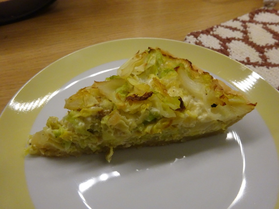

Wirsing-Quiche

- Zubereitung: ca. 30 Minuten
- Backen: ca. 30 Minuten
- Für 4 Personen
- ca. 580 Kalorien
Zutaten
- 600 g Wirsing, geputzt und in Streifen geschnitten
- 1 EL Butter
- 1 EL Sonnenblumenöl
- Blätterteig, für 1 Springform 26 cm
- 3 Eier
- 150 ml Milch
- 100 ml Sahne
- 100 g Bergkäse, gerieben
- Muskatnuss
Zubereitung
- In einer großen Pfanne oder Topf Butter und Öl erhitzen. Den Wirsing kurz andünsten, 3 EL Wasser zugeben und abgedeckt unter häufigem Wenden weich dünsten.
- Mit Salz, Pfeffer und Muskat würzen. Abkühlen lassen.
- Eine Springform 26cm mit Blätterteig auskleiden, den Boden mit einer Gabel regelmäßig einstechen.
- Eier, Milch, Sahne und Käse verrühren, den Wirsing untermischen. In die Springform geben.
- Bei 170°C 35 bis 45 Minuten auf unterer Schiene backen, evtl. gegen Ende mit Pergamentpapier abdecken.
Quelle: https://www.chefkoch.de/rezepte/185221079606478/Wirsing-Quiche.html